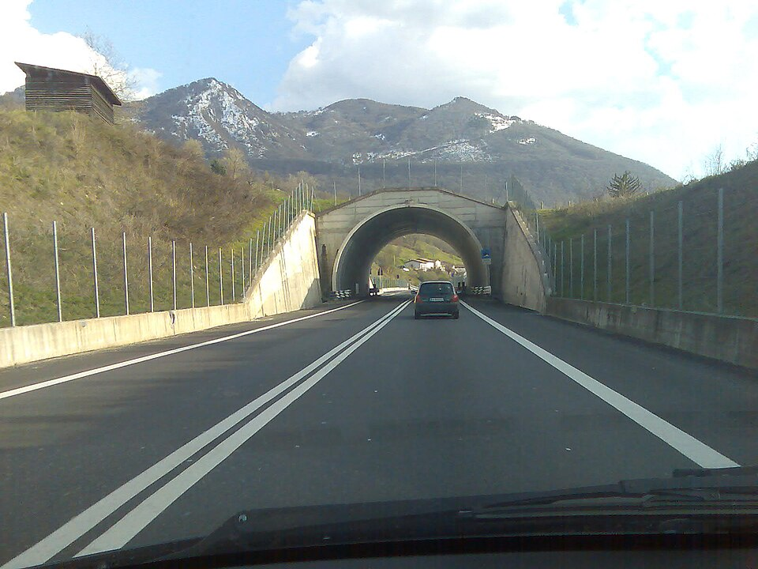

Simulation Suivi de Ligne — Capteurs IR
Erreur PID en temps réel (vert = stable · rouge = perturbation)
Détails du Système
Ce véhicule suit une trajectoire (ligne noire) en temps réel grâce à un tableau de capteurs infrarouges connectés à un Arduino. L'algorithme PID corrige en permanence l'écart entre le robot et la consigne.
Simule un choc latéral (nid de poule, vent). Observez la correction rapide et la stabilisation sur le graphe.
Technologies
Arduino Uno Capteurs IR QRE1113 Pont H L298N C/C++ PWMUtilité dans la vie réelle
Le suivi de ligne est la brique fondamentale de la robotique industrielle : AGV dans les entrepôts Amazon, robots de chaîne de montage. Le PID est l'algorithme de régulation le plus utilisé au monde (90% des systèmes industriels).
🚘 ANALOGIE : LSA / LANE KEEPING ASSIST
Vision autoroute temps-réel
